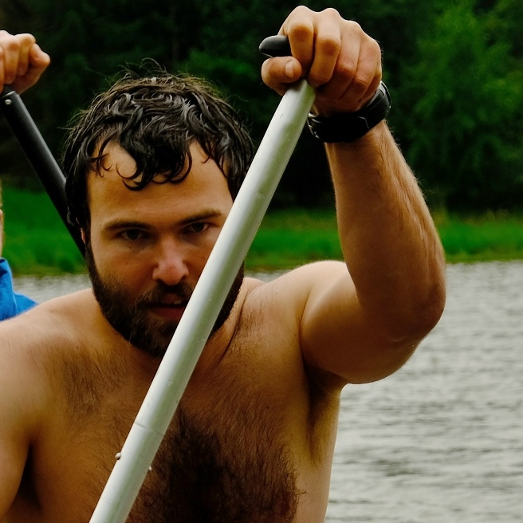

Jiří "Maara" Marek
Za největší vynález v historii lidstva považuju kolo. Dnes to vypadá jako samozřejmost, ale když se nad tím zamyslíte, tak v té době neexistovalo nic, co by se točilo. Podle mě to musel být geniální nápad.
A když bych si mohl vybrat, chtěl bych si vzlkoušet žít v odobí po druhé světové válce, někde ve velkém městě v U.S.A. Byl to právem hrdý stát, a ta motivace byla znát i na míře jejich technologického pokroku.
Navíc, tehdy neexistovaly mobily, takže lidi ještě museli přemýšlet.

Kuba Streit
Vynález, bez kterého by se nám nežilo tak dobře?
Knihtisk. Za prvé umožnil šíření vzdělanosti mezi širokou
veřejnost a tím vznik nespočtu dalších vynálezů. A za druhé
umožnil sdílet příběhy [od] zajímavých lidí, ať už fiktivní,
či reálné.
Kdybych nežil teď, chtěl bych žít teď, protože nikdy dřív
jsme se nejspíš neměli tak dobře. Navíc, každou dřívější
dobu si idealizujeme a žít v ní by určitě nebylo tak snadné,
jak se nám může zdát.
A pozdější doba? Té brzké nevěřím a přizpůsobit se té vzdálené by mohlo dát dost zabrat.

Honza Mrázek
Přemýšlel jsi někdy o tam, jak je tranzistor důležitý objev? Podívej se na libovolný předmět kolem tebe. Pokud to není svíčka z včelího vosku, tak byl pravděpodobně vyroben strojem řízeným počítačem, který je poskládaný z tranzistorů.
S tím se pojí druhá věc - mám pocit, že většina lidí jsou málo líní a málo si snaží svou práci usnadnit pomocí vynálezů.
Kdybych nežil teď, zajímalo by mě, jak bude svět vypadat za 100 let.
Eva "Efka" Pavloušková
Nejlepším vynálezem lidstva je pro mě stále toaletní papír. Dostal se sice do křížku se zubním kartáčkem, ale nakonec vyhrál toaletní papír.
Ve společnosti mi chybí staromódní gentlemani a pravé lady jako ze Saturnina.
Kdybych si mohla vybrat, chtěla bych žít v té době. Na jednu stranu tam kavalírství ještě nevymřelo, na stranu druhou je to už doba plná vynálezů a pokroku, který žití usnadňoval a dopřával i možnost odpočinku.

Henrich "Heňo" Lauko
Za prevratný vynález považujem umývačku na riad. Viete si predstaviť koľkým
hádkam o špinavom riade taká umývačka zabráni. Mnohý jej môžeme byť vďačný za
spokojnú domácnosť.
V spoločnosti mi chýba altruizmus, ktorý pomáha rozvijať celú komunitu.
Súdržnosť vždy priala pokroku.
Občas si vravím aký bude život po doktoráte, a koľko súčastného výskumu
posúva našu civilizáciu niekam ďalej, a koľko zaujímavých výskumov si nikto
nikdy nevšimne.
Honza "Štouri" Štourač
Svůj medailonek doplní